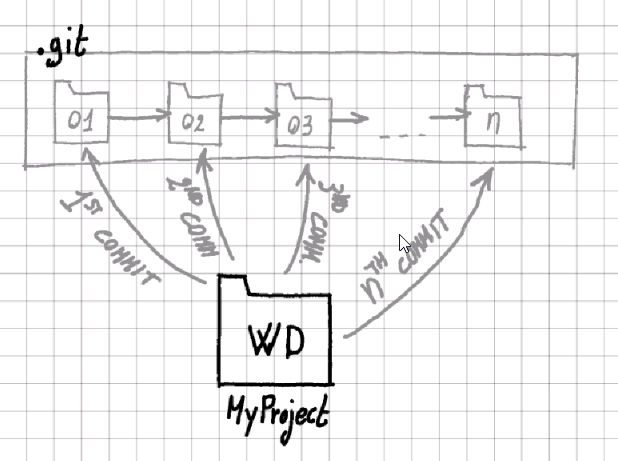
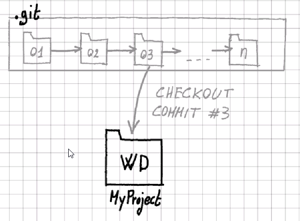
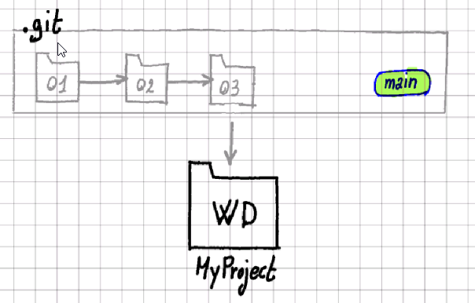
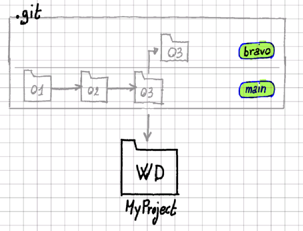
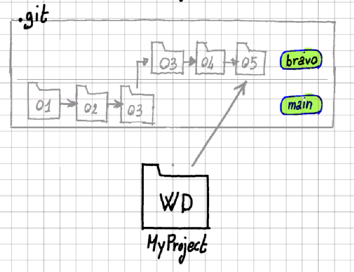
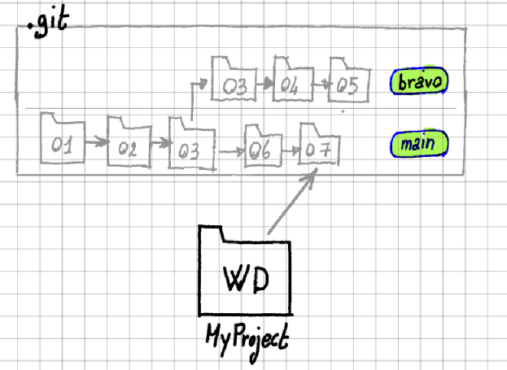
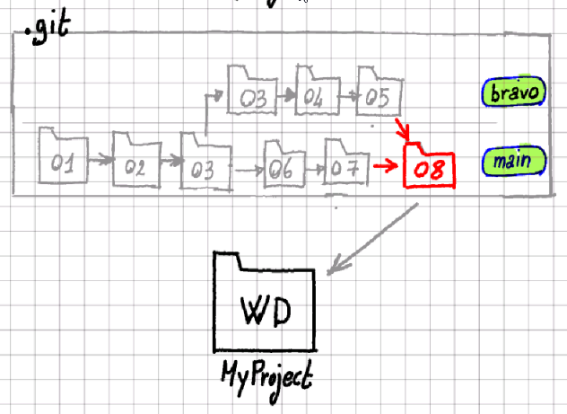

Git Tutorial for non-programmers
Git is a free and open source distributed version control system designed to handle everything from small to very large projects with speed and efficiency. It is the most popular version control system among professional programmers, and this tutorial aims to making it understandable and usable by non-programmers.
Git can be used both from the command-line interface (a.k.a. cmd under windows) or
via a graphical user interface. This page describes the operations that Git can
execute, independently from the type of interface and refers to other pages for
the CLI and GUI way of doing it.
Let's get started: init
Say that you have a folder MyProject containing some files (or empty) and you want to start
version-controlling it with git. To do that you ask git to run the init operation.
The git init operation creates a .git subfolder inside the MyProject folder, which will
hold all the git internal files. You don't need to be concerned about that folder; just don't
delet it, or git will lost all its memory about the version history of MyProject.
Learn how to perform the
git initoperation via the CLI or via the GUI.
Save your work: commit
We all make backups of our work so now and then: we take the folder containig our work
and we make a copy of it, namining it something like MyProject_2024-10-14. So, if anything
goes wrong with the files in our working directory MyProject, we can always restore
an older version of it.
In git terms, this is a commit operation (to commit = consign or record for preservation).
You run a git commit operation and git will make a copy of your working directory and
give it a name for you. You can commit as many versions of your working directory as you want.
Notice that git commit takes a snapshot of your entire working directory, but it does it in a smart and disk-space-efficient way: just the minimum amount of information strictly necessary will be stored on disk.
We will visually represnt the working directory (WD) and its commits (git name for snapshot/backup) as shown in the following picture.

Learn how to perform the
git commitoperation via the CLI or via the GUI.
Restore your work: checkout
If you want to restore the working directory to the status it had at the moment of
a certain commit, you run the git checkout operation.

Learn how to perform the
git checkoutoperation via the CLI or via the GUI.
Try new ideas: branch
There are situations when you may want to create a copy (WD2) of your working directory (WD1), try something new without messing up the original copy WD1 and eventually, if your new idea works, delete the original WD1 and go back to having only one version (WD2) of your work. If your new idea turns out to be a bad idea, you can just delete the second copy WD2 of your working directory and go back to the original copy WD1.
The operation of creating a copy of your working directory, in Git is called
branching; except that Git doesn't really create a copy of anything: the branch
exists in the .git folder and you just choose which branch gets loaded in your
working directory.
Say that you have done 3 commits and that your working directory corresponds to
the third commit. In git terms, you are on the main branch and the status
of your project looks like the following figure.

When you create a new branch (say branch 'bravo'), it's like if a copy of commit 03 is made internally by git.

Now you can switch to the branch 'bravo' and start committing changes to that branch, while the 'main' branch stays unchanged.

You can switch between your two branches as many times as you want. Every time you switch branch, the latest commit of that branche will be checked-out to your working directory. If you switch back to the 'main' branch, you can also keep committing changes to it.

Let's go back for a moment to the original metaphor of two copies of the same
folder (the two branches of my project). And let's immagin that we have
modified both of them (committed changes in both branches). In such a situation,
going back to one version that keeps all the changes made to both branches, can
be a real pain. Git makes it easy, by implementing the merge command.
Learn how to perform the
git branchoperations via the CLI or via the GUI.
Synchronize branches: merge
The git merge command takes the last commits of two different branches and mixes
them together in a new commit, so that the new commit contains all the changes of both
the branches. The following figure shows merging the branch 'bravo' (commit 05) and
the branch 'main' (commit 07) into the new commit 08, which is then added to
the 'main' branch.

Learn how to perform the
git mergeoperations via the CLI or via the GUI.
Start cooperating on existing projects: clone
in progress ...
Share your contributions: push
in progress ...
Stay in sync: pull
in progress ...